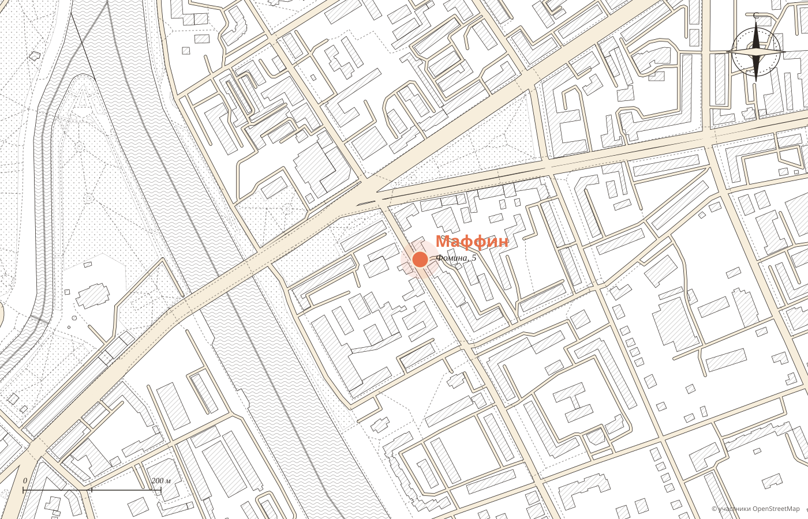

№ 1
Маффины
«В кексиках‑маффинах очень много начинки»
отзыв 2015 года
···· ₽
Демо-макет студии MERIDIAN · не является официальным сайтом заведения
Кофейни с завтраками
Сырники с рикоттой под солёной карамелью, сырный раф и маффины, в которых много начинки. Три кофейни в центре Орла, и все открываются в половине восьмого.
каждый день 7:30 до 22:00
во всех трёх кофейнях


Каждый день
Анна пишет: «Чудесное место для приятного завтрака в раннее время!» А Марина добавляет: «В Маффине утро всегда доброе и позитивное».
Завтрак
«Я выбрала сырники с рикоттой, политые солёной карамелью, и не прогадала: сытно, вкусно и душевно».
Анна, 2ГИС
Витрина
Отзывы о Маффине в 2ГИС тянутся с 2015 года, и уже тогда гости хвалили начинку. Сейчас у кофейни премии 2ГИС 2018 и 2019 и «Лучшая кофейня 2026».
№ 1
«В кексиках‑маффинах очень много начинки»
отзыв 2015 года
···· ₽

№ 2
«Очень много пончиков!»
тот же отзыв
···· ₽

№ 3
«Ребёнок постоянно ходит туда за пряниками»
Елена, 2ГИС
···· ₽
Авторские
Денис пишет коротко: «Авторские напитки бомба!» Ирина отдельно отмечает выбор без молока и сезонное меню с изумительными новинками.


К кофе


«Кофе и чай облепиха‑имбирь очень вкусные, чизкейк и меренговый рулет объеденье», пишет Алёна. Цены подставляются из вашего меню.
Ваш же слоган
Сейчас эта фраза живёт на обложке группы ВКонтакте. На сайте она становится первой кнопкой: гость из поиска сразу попадает в ваше приложение и выбирает время.

Орёл
№ 1
до 28 мест · пончики, супы
каждый день 7:30 до 22:00
№ 2
веранда · детский уголок · вафли
каждый день 7:30 до 22:00
№ 3
кофе с собой
каждый день 7:30 до 22:00
Статус «открыто» считается по московскому времени. Адреса и часы из карточек 2ГИС.
Что любят гости
Из отзывов гостей в 2ГИС. Наведите на слово или нажмите на него: покажем, как это выглядит.

№ 1 · адрес и часы
Ещё две кофейни: Тургенева, 22 и Октябрьская, 16/18.

Для владельца
Гость из поиска сразу попадает в предзаказ.
Адреса, часы и «открыто сейчас» для каждой.
Сырники, раф и маффины видно ещё до прихода.
Никаких персональных данных: политика конфиденциальности не нужна.